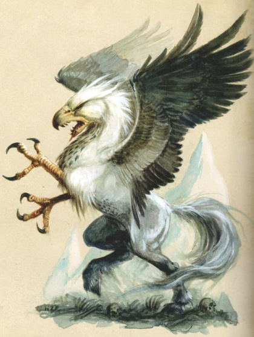
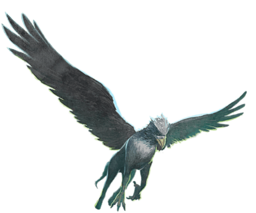
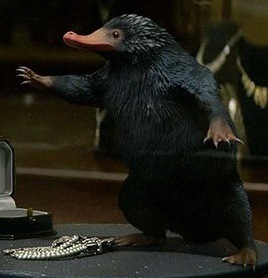
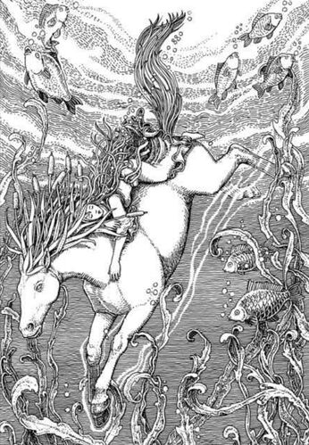
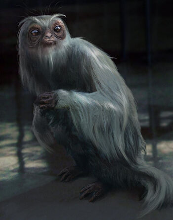

Le Niffleur est une petite créature à la fourrure noire qui a une prédilection pour tout ce qui brille.
| L'Hippogriffe | |
|---|---|
|  | |
| Statut | Animal |
| Apparence |
|
| Caractère |
|
| Yeux | Orange |
| Plumes/Poils | Plumage qui se transforme en pelage :
|
| Pays d'origine | Europe |
| Localisation | Monde entier |
| Alimentation | Insecte trouvé dans le sol en creusant : |
|
|
Les hippogriffes sont des créatures ressemblant à un hybride de cheval et d'aigle. C'est une créature extrêmement fière qui peut blesser quiconque la maltraite.
L'hippogriffe est une créature mi-cheval et mi-aigle, il est proche du cheval ailé en apparence avec la tête et les membres intérieur d'un aigle.
Lorsqu'on approche un hippogriffe, il est indispensable de le regarder dans les yeux. Il convient alors de s'incliner pour montrer ses bonnes intentions. Si l'hippogriffe rend le salut, on peut l'approcher de plus près. Il est possible de le dresser mais seuls des experts peuvent s'y risquer. Tout comme le cheval ailé, l'hippogriffe doit subir à intervalles réguliers un sortilège de Désillusion.
Les hippogriffes construisent à même le sol des nids dans lesquels ils pondent un seul œuf grand et fragile qui éclot vingt-quatre heures plus tard. Au bout d'une semaine, le jeune hippogriffe est prêt à voler, mais il lui faudra encore plusieurs mois avant de pouvoir faire de grands trajets. Un hippogriffe dressé peut servir de monture.
| Le Niffleur | |
|---|---|
|  | |
| Statut | Animal |
| Apparence |
|
| Caractères |
|
| Plumes/Poils | Fourrure noires épaisse |
| Grandeur | Entre 12 et 16 cm |
| Localisation | Grande-Bretagne |
| Alimentation | Petit insecte en tout genre |
Le Niffleur est une petite créature à la fourrure noire qui a une prédilection pour tout ce qui brille.
Le Niffleur vit dans des terriers creusés à cinq ou six mètres de profondeur. On le trouve également dans les mines. Le Niffleur donne naissance à des portées de six à huit petits.
Bien que le Niffleur soit doux et même affectueux par nature, il peut se révéler destructeur pour l'environnement immédiat et ne devrait jamais être gardé à l'intérieur d'une maison.
Le Niffleur est souvent utilisé par les gobelins pour creuser la terre à la recherche de trésors.
| Le Kelpy | |
|---|---|
|  | |
| Statut | Animal |
| Apparence | Souvent représentée en forme de cheval à la crinière constituée de joncs |
| Localisation |
|
| Alimentation |
|
Le Kelpy est un démon des eaux métamorphe qui hante les rivières et les lochs de Grande Bretagne et d'Irlande.
Sa forme la plus commune est celle d'un cheval possédant une crinière constituée de joncs.
Le Kelpy qui n'est pas maitrisé par un sorcier compétent est dangereux voir mortel lorsqu'il est affamé. Il est connu pour son attirance et son appétit insatiable pour l'être humain, qu'il invite, dans un premier temps, à monter sur son dos. À peine la victime a-t-elle grimpé sur son dos que l'animal plonge et l'entraîne au fond de l'eau pour la dévorer.
Le sortilège Repousse-Moldu généralement utilisé pour dissimuler certaines créatures magiques, parfois même pour protéger les Moldus trop curieux, est inefficace avec le Kelpy. Le Kelpy a en effet la faculté de neutraliser les effets de ce sortilège, ce qui rend l'animal bien plus dangereux. Le Kelpy du Loch Ness est à la fois le plus grand et le plus célèbre. Les Moldus le connaissent sous le nom de "monstre du Loch Ness".
| Le Demiguise | |
|---|---|
|  | |
| Statut | Animal |
| Apparence | Singe gracieux |
| Caractère | Paisible |
| Yeux | Yeux noir mélancolique qui deviennent bleau lorsqu'il a une vision |
| Plumes/Poils | Longue fourrure argentée et soyeuse |
| Pays d'origine | Extrême-Orient |
| Alimentation | Herbivore |
La Demiguise est une créature magique. Elle est très difficile à repérer en raison de son aptitude à se rendre invisible lorsqu'elle est menacée. Seuls les sorciers spécialement entraînés à la capture de la Demiguise sont en mesure de la voir
Elle ressemble à un singe gracieux avec de grands yeux mélancoliques le plus souvent cachés derrière ses cheveux. Son corps est recouvert d'une longue fourrure argentée et soyeuse. La fourrure de Demiguise est particulièrement appréciée car les poils, une fois tissés, permettent de fabriquer des capes d'invisibilité.
Le Demiguise est une créature paisible qui a un sens maternel très développé d'ailleurs il le démontrera en s'occupant de l'Occamy
La Demiguise possède la capacité de prédire les futurs envisageables, ce qui complique sa capture. Ainsi, la seule manière pour arriver à l'attraper est d'effectuer une action totalement imprévisible.